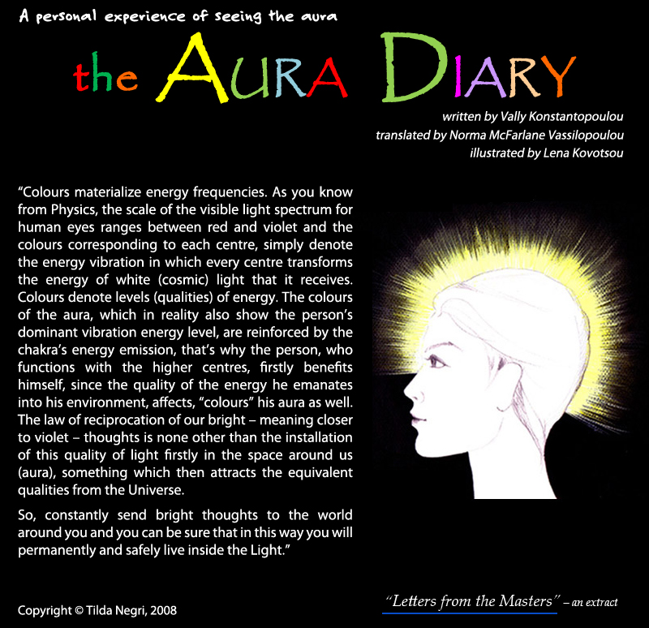

Back
Enter
The Aura Diary, A personal experience of seeing the aura, written by Vally Konstantopoulou, translated by Norma McFarlane Vassilopoulou, illustrated by Lena Kovotsou, copyright @ Tilda Negri, 2008, to-en.gr, To En